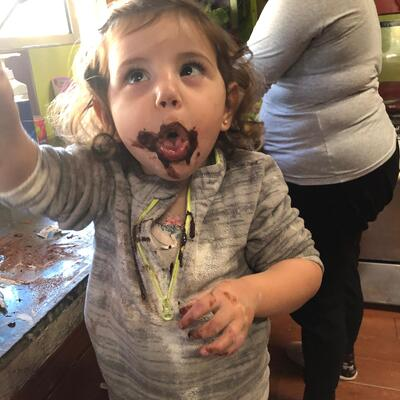
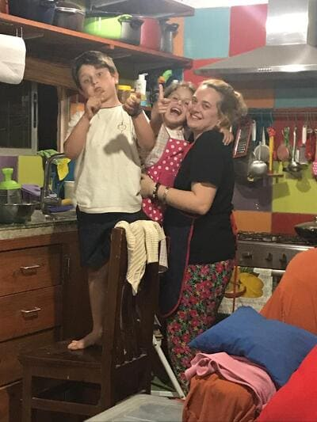
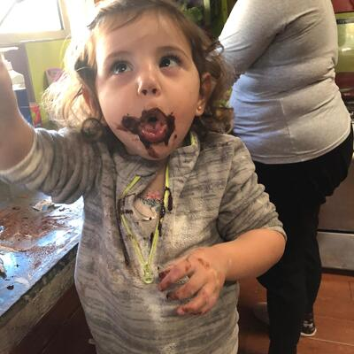
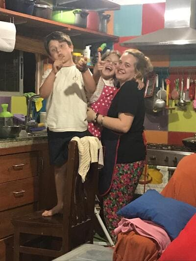
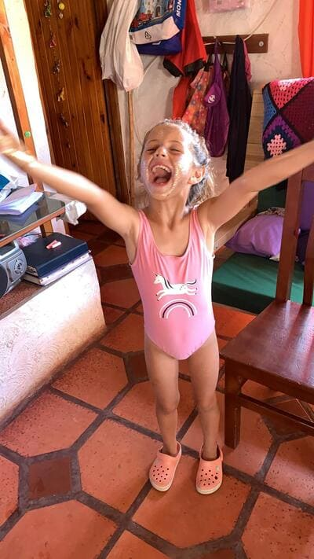
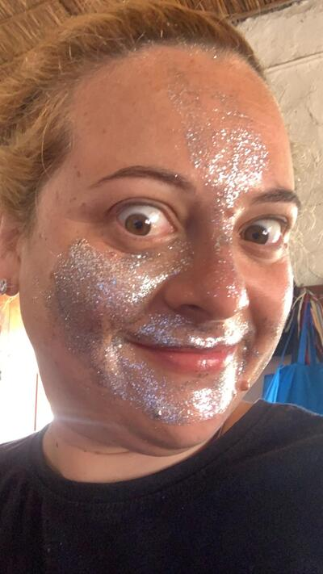
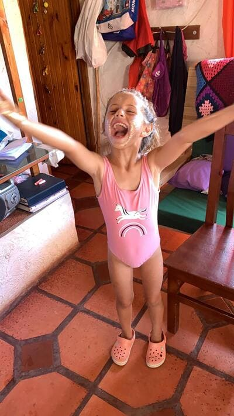
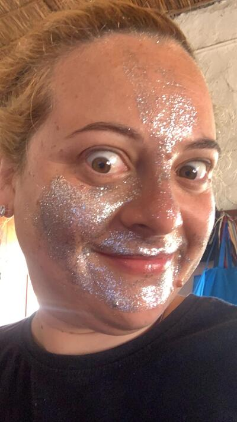

Cocinar juntos es una de nuestras actividades favoritas. Mi madre -la abuela Nonna- les hizo a los tres (falta el de Emi, cuando tenga edad) delantales para la ocasión. Nuestra receta por excelencia es el "Punto Nieve" dícese del merengue, que luego nos comemos a cucharadas. Cuando descubrimos las Cakepops, a ellos les coparon, y pasó al top cinco de nuestros manjares.
Otra de nuestras actividades favoritas, es maquilarnos. Nosotros le decimos pintarnos. Después jugamos a que somos cantantes o piratas, todo depende del día. Por lo tanto, mis delineadores y labiales se han resignificado desde que soy "Tía Mangui".
 


